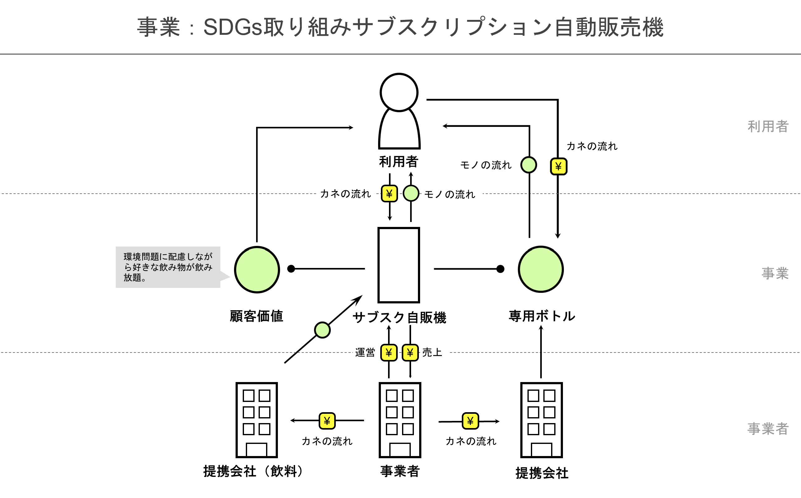

ビジネスモデル図解
SDGs取り組みサブスクリプション制自動販売機

私たちは環境問題をテーマに取り上げ、ペットボトルのポイ捨てによる環境汚染、プラスチックごみのリサイクルにかかるコストや排出されるCO₂などにフォーカスした。
そこで、そもそもペットボトルの使用を辞め、さらに顧客の満足度を上げるためのサブスクリプション制の自動販売機を考えた。
サブスク自販機専用のボトルを販売し、いくつかのプランによって月額・年額で補充し放題にすることで、ペットボトルを使用せず低価格で飲み物を販売する。
保温性のあるボトルを販売したり、氷を入れられる機能をつけることで、ペットボトルの保温性の低さというデメリットにも対応できる。
スマートフォンの連携、期間限定オリジナルドリンクの販売、ボトルや自販機の衛生管理方法なども考えていきたい。